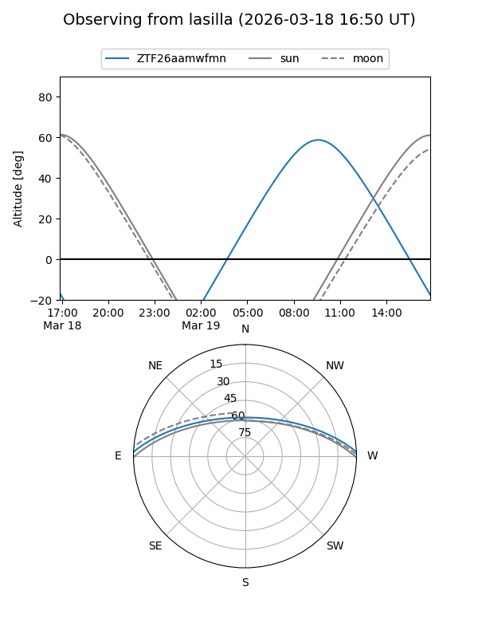
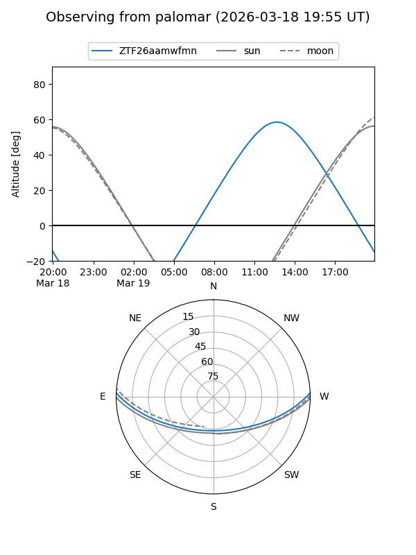

ZTF26aamwfmn
Target ZTF26aamwfmn at 2026-03-18 15:10
Aliases and brokers:
FINK: link
Lasair: link
ALeRCE: link
alt names
ZTF26aamwfmn (ztf,fink_ztf)
Coordinates:
equatorial (ra, dec) = 249.8221,+1.99523
equatorial (HMS+DMS) = 16:39:17.31,+01:59:42.83
galactic (l, b) = (18.3815,+30.05230)
Flags:
Photometry:
last ztfg=20.13
1 ztfg detections
Lightcurve
Visibility


Additional plots